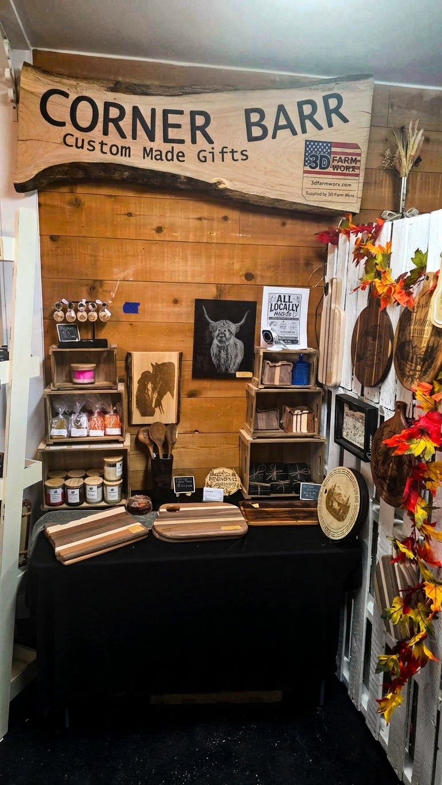

HANDCRAFTED • PERSONALIZED • MADE WITH CARE
Gifts made
from the heart.
Handmade cutting boards, candles, soaps, holiday gifts, and personalized treasures proudly made in Southern Oregon.
THE CORNER BARR STORY
Made with heart.
Made by hand.
Welcome to Corner Barr, where a love for creating, a little bit of country charm, and a whole lot of heart come together.
Corner Barr was born from a simple love of making things that are beautiful, useful, and meaningful. What started as creating pieces for family, friends, and special occasions grew into something much bigger—a little local business built around the joy of turning an idea into something you can hold, use, gift, and treasure.
Every piece is created with care, from custom laser engraving and rustic wood pieces to personalized cutting boards, home décor, candles, gift baskets, and unique keepsakes.
We're proud to call Southern Oregon home. Every Corner Barr creation is made locally, right here in our community.
Shop Handmade Gifts
VISIT THE SHOP
Your local gift shop in Central Point.
211 N Front St
Central Point, OR 97502
Open Tuesday to Sunday, 11am to 8pm.
Closed Mondays.
Proudly serving all of Southern Oregon, from Grants Pass and Merlin to Medford, Eagle Point, Jacksonville, Ashland and the California border. Can't make it in? We ship right to your door.